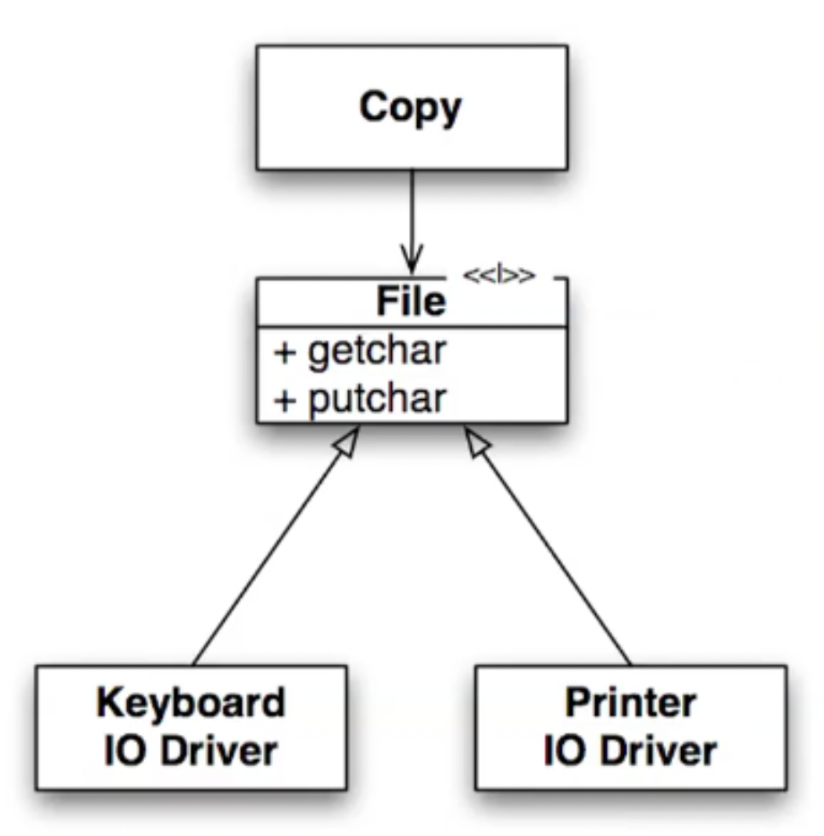

들어가면서
- 해당 포스트는 백명석님의 클린 코더스 강의를 정리한 내용입니다.
- 강의 자료는 깃 허브에서 보실 수 있습니다.
클린 코더스 강의 12. SOLID Foundation
- 소스코드 자체가 설계다
- 안좋은 설계의 냄새 - Rigidity, Fragility, Immobility
- 불필요한 복잡성
- 코드가 썩어가는 현상
The Source Code is the Design
건축 엔지니어나 전기 엔지니어가 하는 일은 설계도, 회로도같은 document를 만드는 것이다.
그렇다면 소프트웨어 엔지니어의 결과물은 무엇인가? 소스코드인가?
소프트웨어 엔지니어의 결과물은 소스코드와 빌드 스크립트를 합친 실행가능한 바이너리 코드이다. 따라서 소스코드가 document의 역할을 한다고 볼 수 있다.
| 건물, 회로, 기계 | 소프트웨어 |
|---|---|
| 저렴한 설계 비용 | 비싼 설계 비용 (소스코드 작성) |
| 비싼 수정 비용 | 저렴한 구축 비용(컴파일, 빌드) |
Design Smells - Rigidity, Fragility, Immobility
- Rigidity
- 정의 : 시스템의 의존성으로 인해 변경하기 어려워지는 것
- 원인 : 많은 시간이 소요되는 테스트와 빌드, 전체 리빌드를 유발하는 아주 작은 변화
- 테스트와 리빌드 시간을 줄이면 Rigidity가 줄어들고 수정이 용이해진다
- Fragility
- 정의 : 한 모듈의 수정이 다른 모듈에 영향을 미치는 것
- 예시 : 자동차를 SW로 제어하는데 라디오 버튼을 수정했을 때 자동창문이 영향을 받는 경우
- 해결책 : 모듈간의 의존성을 제거
- Immobility
- 정의 : 모듈이 쉽게 추출되지 않고 재사용되지 못하는 것
- 예시 : 로그인 모듈이 특정 DB의 schema를 사용하고, 특정 UI skin을 사용하는 경우, 이 로그인 모듈은 다른 시스템에서 재사용되지 못할 것
- 해결책 : DB, UI, Framework 등과 결합도를 낮추는 것
+) Viscosity (점성)
- 빌드/테스트 같은 필수 오퍼레이션들이 오래 걸려 수행이 어렵다면 그 시스템은 역겨운(disgust) 것이다. 이런 시스템은 여러 레이어를 가로질러 의존성을 갖는 경우가 많다.
- 항상 같은 역겨움의 원인은 Irresponsible tolerance(무책임한 용인)이다. 개발자는 이런 역겨움이 발생할 것을 알면서도 용인한다.
- 강하게 coupling된 시스템은 테스트, 빌드, 수정을 어렵게 한다.
- 따라서 이를 해결하기 위해서는 dependency는 유지한 채로 decoupling해야 한다.
Needless Complexity
SW는 요구사항이 끊임없이 변한다. 따라서 미래를 어떻게 다루는지가 SW 설계의 이슈라고 볼 수 있다.
따라서 개발자는 현재 요구사항만 구현하는 것과 미래를 예측하여 구현하는 것 사이에서 고민한다.
하지만 앞으로의 확장을 고려하여 설계한다면 시스템은 불필요하게 복잡해지고, 개발자는 현재조차 제어할 수 없게 되며 이런 불필요한 복잡함은 강한 coupling을 유발한다.
이를 해결하기 위해서는 현재 요구사항에 집중하여 미래의 변경에 잘 대처할 수 있도록 해야한다. 그러기 위해서는 테스트를 잘 작성해야 한다.
Code Rot
키보드 입력을 받아 프린터로 출력하는 프로젝트가 있다고 하자. 처음에는 코드를 아래와 같이 작성했다.
1
2
3
4
5
public void copy(){
int c;
while((c = readKeyboard())!=EOF)
writePrinter(c);
}
여기까진 문제가 없어보인다.
하지만 키보드와 종이 테이프 리더기 두 가지 방식으로 입력을 받아야 한다는 새로운 요구사항이 추가되었다.
1
2
3
4
5
6
7
private boolean GptFlag = false;
public void copy(){
int c;
while((c = (GptFlag? readPt() : readKeyboard())) != EOF)
writePrinter(c);
}
일단 flag를 추가해서 요구사항을 해결했다.
그런데 이번에는 출력을 프린터, 종이 테이프 펀처에 가능하게 해달라는 요구사항이 추가되었다. 그래서 아래와 같이 수정했더니 동작한다.
1
2
3
4
5
6
7
8
9
10
11
12
private boolean GptFlag = false;
private boolean GpunchFlag = false;
public void copy(){
int c;
while((c = (GptFlag? readPt() : readKeyboard())) != EOF){
if(GpunchFlag)
writePunch(c);
else
writePrinter(c);
}
}
하지만 시간이 흐름에 따라
- 점점 더 많아지는 입출력 장치
- 점점 더 커지는 코드
- 점점 더 지저분해지는 코드
- 변경/분석이 어려워짐
- 가독성/유연성 저하
What is OOP?
1
2
3
4
5
public void copy(){
int c;
while((c = getChar()) != EOF)
putChar(c);
}
stdio로 입출력하여 다른 장치로 redirect 가능하게 한다.
따라서 테이프 리더로부터 입력받을 수 있게 해달라는 요구사항이 추가되었을 때 OOP는 이미 테이프 리더로부터 입력 받을 수 있도록 되어 있다.
이를 통해 장치 추가에 따른 코드 품질이 저하 되는 것을 막고 재컴파일하지 않아도 되게 되었다.

앞선 예제에서는 copy()라는 high level module이 keyboard와 printer라는 low level에 의존하고 있는 형태였기 때문에 모듈이 늘어날 때마다 low level로의 fan-out이 늘어가는 것을 확인했다.
하지만 OOP에서는 Dependency Inverted가 발생하여 제어의 흐름과 종속이 반대 방향으로 흐른다. 이로 인해 copy() 모듈이 fan-out으로 계속 커져가는 것을 막을 수 있다.
1
2
3
4
5
6
7
8
9
10
11
public interface Reader{...}
public interface Writer{...}
public void copy(Reader reader, Writer writer){
int c;
while((c = reader.getChar()) != EOF)
writer.putChar(c);
}
public class Keyboard implements Reader{...}
public class Printer implements Writer{...}
Inheritance, Encapsulation, Polymorphism 등은 객체지향의 핵심이 아니라 주요 메커니즘이다.
객체지향의 핵심은 IoC를 통해 상위 레벨의 모듈을 하위 레벨의 모듈로부터 보호하는 것이다.
따라서 Dependency Management를 통해 high level policy를 low level policy로부터 분리해야 한다.
Dependency Management
의존성 관리에 대한 중요한 규칙 - SOLID
- SRP : Single Responsibility Principle
- OCP : Open Closed Principle
- LSP : Liskov Substitution Principle
- ISP : Interface Segregation Principle
- DIP : Dependency Inversion Principle